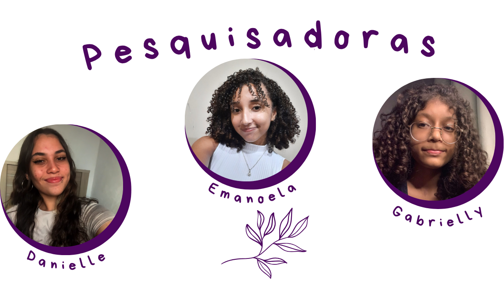

Somos alunas do Instituto Federal de Ciência, Educação e Tecnologia de São Paulo - Campus Guarulhos, cursamos os cursos de Informática (Danielle) e Mecatrônica (Emanoela e Gabrielly). Pensamos o Sistema Olympe for Safe com o intuíto de unir a tecnologia com a mobilidade urbana feminina a fim de construir um ambiente urbano cada vez mais seguro para as mulheres e que elas sejam livres para caminhar por onde quiserem.
Danielle: Eu pesquiso sobre mobilidade urbana desde 2024 e venho desenvolvendo o aplicativo e o site do Olympe for Safe há 1 ano e meio, ver o projeto tomando forma e até onde ele pode chegar é muito gratificante, sei que essa pesquisa tem potencial para muito mais e tenho orgulho de tudo que já produzi com ela e claro, todas as experiências incríveis que me proporcionou. Acredito que as mulheres devem ocupar seus espaços e esse projeto reflete muito bem essa ideia. Por mais mulheres na ciência, mais mulheres na tecnologia e principalmente, livres!